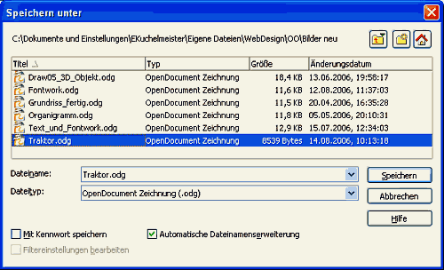

| [zurück] | [Hauptmenü] |
Speichern von Zeichnungen
Das "Speichern" oder "Speichern unter"
 Abbildung 1: Der OpenOffice.org Speichern-Dialog (kann je nach Betriebssystem und Einstellung unter "Extras > Optionen > OpenOffice.org > Allgemein > Öffnen/Speichern-Dialoge" unterschiedlich aussehen. Beim Speichern von Zeichnungen haben Sie als Dateityp folgende Auswahlmöglichkeiten:
- OpenDocument Zeichnung (.odg)
- OpenDocument Zeichnungsvorlage (.otg)
- OpenOffice.org 1.0 Zeichnung (.sxd)
- OpenDokument Zeichnungsvorlage (.std)
- StarDraw 5.0 (.sda)
- StarDraw 5.0 Vorlage (.vor)
- StarDraw 3.0 (.sdd)
- StarDraw 3.0 Vorlage (.vor)
Sie sollten das Format OpenDocument Zeichnung (.odg) verwenden. Wenn das Häkchen bei "Automatische Dateinamenserweiterung" gesetzt ist, genügt es bei Dateiname den gewünschten Dateinamen ohne Erweiterung einzutragen. Klicken Sie auf Button Speichern
Das Exportieren
Es gibt noch weitere Möglichkeiten der Speicherung Ihrer Draw Zeichnung. Zunächst sollten Sie ihre Zeichnung im Draw Format, Dateiendung ODG abspeichern, damit Sie später auch noch Änderungen an der Zeichnung vornehmen können.
Export in ein anderes Grafikformat
Es stehen eine große Anzahl an Grafikformaten zum Export zur Verfügung. Diese Grafiken können mit Programmen (Viewern) angezeigt, bzw. in andere Anwendungen wieder importiert werden.
| Dateiformat | Erweiterung |
|---|---|
| Windows Bitmap | *.bmp |
| Encapsulated Postscript | *.eps |
| Enhanced Metafile | *.emf |
| Grafik Interchange FileFormat | *.gif |
| Joint Photographic Experts Group | *.jpg |
| Portable Bitmap | *.pbm |
| Portable Greymap | *.pgm |
| Portable Pixelmap | *.ppm |
| Scaleable Vectorgrafix | *.svg |
| Tagged Image File Format | *.tif(f) |
| X-Pixmap | *.xpm |
| Star View Metafile | *.svm |
| Windows Metafile | *.wmf |
| Mac Pict | *.pct |
| Sun Raster Image | *.ras |
| Portable Network Grafik | *.png |
| OS/2 Metafile | *.met |
Export in ein Dateiformat
Zusätzlich zum Export in Grafikformate, steht Ihnen noch die Möglichkeit zum Export in ein anderes Dateiformat zur Verfügung. Diese Dateien können dann mit bestimmten Anwendungen angezeigt werden. Solche Anzeigeprogramme gibt es für alle Betriebssysteme, so dass die Dateiformate zwischen Windows, Linux, MacOS u. a. Plattformen ausgetauscht werden können.
| Dateiformat | Dateiendung | Anzeigeprogramme |
|---|---|---|
| Hypertext Markup Language | *.html; *.htm | Webbrowser (u.a. MS Internet-Explorer, Mozilla, Firefox, Netscape, SeaMonkey, Opera, Konquerer, Lynx, Camino, Safari...) |
| Portabel Document Format | PDF-Reader (u. a. Acrobat Reader, Foxit-Reader, GhostView...) |
Mehr Informationen zum Export in HTML und PDF finden Sie in der Hilfe.
HTML: Geben Sie im Hilfeindex "Speichern;als HTML" ein und klicken dann auf HTML-Export-Assistent .
PDF: Geben Sie im Hilfeindex "Exportieren;als PDF" ein.